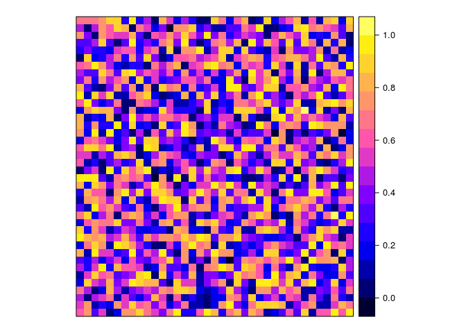

How to use open raster file formats in R: GeoTIFF & GeoPackage
A simple tutorial to demonstrate the use of GeoTIFF and *.gpkg files in R
General note: the way the raster package handles coordinate reference systems has just recently (at the time of writing) become compliant with recent GDAL 3 and PROJ >= 6 versions.
At the time of writing, it was necessary to use the current development version of raster (link).
During the current transition period of supporting both old and new PROJ/GDAL, you may get a decent portion of proj4string-related warnings when running the below code (as seen below), but you can safely ignore them.
For more information, see the CRS tutorial.
This tutorial uses a few basic functions from the dplyr and raster packages. While only a few functions are used, you can use the previous hyperlinks to access the tutorials (vignettes) of these packages for more functions and information.
options(stringsAsFactors = FALSE)
library(raster)
library(tidyverse)
library(inborutils)
You will find a bit more background about ‘why and what’, regarding the considered open standards, in a separate post on this website.
In short, the GeoTIFF and GeoPackage formats are ideal for exchange, publication, interoperability & durability and to open science in general.
The below table compares a few raster formats that are currently used a lot. This tutorial focuses on the open formats.
| Property | GeoTIFF | GeoPackage | ESRI geodatabase |
|---|---|---|---|
| Open standard? | yes | yes | no |
| Write support by GDAL | yes | yes | no |
| Supported OS | cross-platform | cross-platform | Windows |
| Extends non-spatial format: | TIFF | SQLite | MS Access (for personal gdb) |
| Text or binary? | binary | binary | binary |
| Number of files | 1 | 1 | 1 (personal gdb) / many (file gdb) |
| Inspect version’s differences in git version control? | no | no | no |
| Can store multiple layers? | yes | yes | yes |
| Do layers need same extent and resolution? | yes | no | no |
| Coordinate reference system (CRS) in file | same as input CRS | same as input CRS | same as input CRS |
How to make and use GeoTIFF files (*.tif)
Making a mono-layered GeoTIFF file from a RasterLayer R object
Let’s create a small dummy RasterLayer object from scratch, for some
area in Belgium (using the CRS [1] Belgian Lambert 72, i.e.
EPSG-code 31370):
artwork <-
raster(extent(188500, 190350, 227550, 229550), # xmin, xmax, ymin, ymax
res = 50, # resolution of 50 meters
crs = 31370) %>%
setValues(runif(ncell(.))) # fill with random values
What does this look like?
artwork
## class : RasterLayer
## dimensions : 40, 37, 1480 (nrow, ncol, ncell)
## resolution : 50, 50 (x, y)
## extent : 188500, 190350, 227550, 229550 (xmin, xmax, ymin, ymax)
## crs : +init=epsg:31370 +proj=lcc +lat_1=51.16666723333333 +lat_2=49.8333339 +lat_0=90 +lon_0=4.367486666666666 +x_0=150000.013 +y_0=5400088.438 +ellps=intl +towgs84=-106.8686,52.2978,-103.7239,0.3366,-0.457,1.8422,-1.2747 +units=m +no_defs
## source : memory
## names : layer
## values : 0.0001557397, 0.9997439 (min, max)
A simple trick to plot this raster:
spplot(artwork)

To write this RasterLayer object as a GeoTIFF, you can use the
raster::writeRaster() function. In the background, it uses the GeoTIFF
driver of the powerful GDAL library.
artwork %>%
writeRaster("artwork.tif")
And now?
Say HURRAY!!
Making a multi-layered GeoTIFF file from a RasterBrick R object
Let’s create a RasterBrick object of three
layers:
arts <- brick(artwork) # RasterBrick with one layer (the RasterLayer from above)
arts[[2]] <- artwork + 10 # Add second layer, e.g. based on first one
arts[[3]] <- calc(arts[[2]], function(x) {20 ^ x}) # Making third layer from second
names(arts) <- paste0("layer", 1:3)
Note: for complex formulas on large datasets, the calc() function is
more efficient than simple algebraic expressions such as for layer2 (see
?raster::calc).
How does the result look like?
arts
## class : RasterBrick
## dimensions : 40, 37, 1480, 3 (nrow, ncol, ncell, nlayers)
## resolution : 50, 50 (x, y)
## extent : 188500, 190350, 227550, 229550 (xmin, xmax, ymin, ymax)
## crs : +init=epsg:31370 +proj=lcc +lat_1=51.16666723333333 +lat_2=49.8333339 +lat_0=90 +lon_0=4.367486666666666 +x_0=150000.013 +y_0=5400088.438 +ellps=intl +towgs84=-106.8686,52.2978,-103.7239,0.3366,-0.457,1.8422,-1.2747 +units=m +no_defs
## source : memory
## names : layer1, layer2, layer3
## min values : 1.557397e-04, 1.000016e+01, 1.024478e+13
## max values : 9.997439e-01, 1.099974e+01, 2.046429e+14
arts %>%
as.list %>%
lapply(spplot)
## [[1]]

##
## [[2]]

##
## [[3]]

So now what?
Let’s write it!
arts %>%
writeRaster("arts.tif")
But, I want to add 20 extra layers!
(…😣😮…)
arts2 <-
calc(artwork,
function(x) {-1:-20 * x}, # first layer = -1 * artwork
# second layer = -2 * artwork
# ....
forceapply = TRUE)
names(arts2) <- paste0("neg_layer", 1:20)
# adding it to arts:
arts <- brick(list(arts, arts2))
# saving layer names for later use:
mynames <- names(arts)
nlayers(arts)
## [1] 23
names(arts)
## [1] "layer1" "layer2" "layer3" "neg_layer1" "neg_layer2"
## [6] "neg_layer3" "neg_layer4" "neg_layer5" "neg_layer6" "neg_layer7"
## [11] "neg_layer8" "neg_layer9" "neg_layer10" "neg_layer11" "neg_layer12"
## [16] "neg_layer13" "neg_layer14" "neg_layer15" "neg_layer16" "neg_layer17"
## [21] "neg_layer18" "neg_layer19" "neg_layer20"
Overwrite the earlier written file:
arts %>%
writeRaster("arts.tif",
overwrite = TRUE)
That’s about it!
Reading a GeoTIFF file
Nothing can be more simple…
Reading a mono-layered GeoTIFF file with raster() gives back the
RasterLayer:
artwork_test <- raster("artwork.tif")
artwork_test
## class : RasterLayer
## dimensions : 40, 37, 1480 (nrow, ncol, ncell)
## resolution : 50, 50 (x, y)
## extent : 188500, 190350, 227550, 229550 (xmin, xmax, ymin, ymax)
## crs : +proj=lcc +lat_1=51.16666723333333 +lat_2=49.8333339 +lat_0=90 +lon_0=4.367486666666666 +x_0=150000.013 +y_0=5400088.438 +ellps=intl +towgs84=-106.8686,52.2978,-103.7239,0.3366,-0.457,1.8422,-1.2747 +units=m +no_defs
## source : /media/floris/DATA/git_repositories/tutorials/content/tutorials/spatial_standards_raster/artwork.tif
## names : artwork
## values : 0.0001557397, 0.9997439 (min, max)
Reading a multi-layered GeoTIFF file with brick() returns the
RasterBrick:
arts_test <- brick("arts.tif")
However:
names(arts_test)
## [1] "arts.1" "arts.2" "arts.3" "arts.4" "arts.5" "arts.6" "arts.7"
## [8] "arts.8" "arts.9" "arts.10" "arts.11" "arts.12" "arts.13" "arts.14"
## [15] "arts.15" "arts.16" "arts.17" "arts.18" "arts.19" "arts.20" "arts.21"
## [22] "arts.22" "arts.23"
As you see, layer names are not saved in the GeoTIFF. You define them in R:
names(arts_test) <- mynames
arts_test
## class : RasterBrick
## dimensions : 40, 37, 1480, 23 (nrow, ncol, ncell, nlayers)
## resolution : 50, 50 (x, y)
## extent : 188500, 190350, 227550, 229550 (xmin, xmax, ymin, ymax)
## crs : +proj=lcc +lat_1=51.16666723333333 +lat_2=49.8333339 +lat_0=90 +lon_0=4.367486666666666 +x_0=150000.013 +y_0=5400088.438 +ellps=intl +towgs84=-106.8686,52.2978,-103.7239,0.3366,-0.457,1.8422,-1.2747 +units=m +no_defs
## source : /media/floris/DATA/git_repositories/tutorials/content/tutorials/spatial_standards_raster/arts.tif
## names : layer1, layer2, layer3, neg_layer1, neg_layer2, neg_layer3, neg_layer4, neg_layer5, neg_layer6, neg_layer7, neg_layer8, neg_layer9, neg_layer10, neg_layer11, neg_layer12, ...
## min values : 1.557397e-04, 1.000016e+01, 1.024478e+13, -9.997439e-01, -1.999488e+00, -2.999232e+00, -3.998976e+00, -4.998719e+00, -5.998463e+00, -6.998207e+00, -7.997951e+00, -8.997695e+00, -9.997439e+00, -1.099718e+01, -1.199693e+01, ...
## max values : 9.997439e-01, 1.099974e+01, 2.046429e+14, -1.557397e-04, -3.114794e-04, -4.672192e-04, -6.229589e-04, -7.786986e-04, -9.344383e-04, -1.090178e-03, -1.245918e-03, -1.401657e-03, -1.557397e-03, -1.713137e-03, -1.868877e-03, ...
That’s what we wanted!
The actual data are not loaded into memory, but read in chunks when performing operations. This makes it convenient when using larger rasters:
inMemory(arts_test)
## [1] FALSE
Selecting a specific layer by its name:
arts_test$neg_layer20
## class : RasterLayer
## band : 23 (of 23 bands)
## dimensions : 40, 37, 1480 (nrow, ncol, ncell)
## resolution : 50, 50 (x, y)
## extent : 188500, 190350, 227550, 229550 (xmin, xmax, ymin, ymax)
## crs : +proj=lcc +lat_1=51.16666723333333 +lat_2=49.8333339 +lat_0=90 +lon_0=4.367486666666666 +x_0=150000.013 +y_0=5400088.438 +ellps=intl +towgs84=-106.8686,52.2978,-103.7239,0.3366,-0.457,1.8422,-1.2747 +units=m +no_defs
## source : /media/floris/DATA/git_repositories/tutorials/content/tutorials/spatial_standards_raster/arts.tif
## names : neg_layer20
## values : -19.99488, -0.003114794 (min, max)
How to make and use GeoPackages with raster layers (*.gpkg)
‘GeoPackage’ may sound new and unfamiliar to you – more information can be found in a separate post on this website.
While its vector capabilities are already beautifully supported by GDAL
and the sf package (demonstrated in the other
tutorial)), its raster
capabilities are still less supported by GDAL and dependent applications
such as the R-packages raster and
stars. This is something we can
expect to grow in the future.
GDAL’s GPKG-raster driver itself is still less worked out than its drivers for GeoTIFF or GPKG-vector (note that one GPKG file can accommodate both layer types). For example, only the Byte, Int16, UInt16 and Float32 datatypes can be written by GDAL, while for GeoTIFFs these are Byte UInt16, Int16, UInt32, Int32, Float32, Float64, CInt16, CInt32, CFloat32 and CFloat64 [2].
From my experience, raster GeoPackage files are smaller than GeoTIFF files in the case of larger rasters. This, and the capability to combine raster and vector layers, certainly make it worthwile to consider the GeoPackage format for rasters, if you’re not hindered by the supported data types.
Making a single-raster GeoPackage from a RasterLayer R object
This it is no more difficult than:
artwork %>%
writeRaster("artwork.gpkg", format = "GPKG")
## Warning in .gd_SetNoDataValue(object, ...): setting of missing value not
## supported by this driver
A bit more information on the ‘missing value’ warning can be found in
GDAL’s documentation of GeoPackage
raster. You
should know that the raster package does not yet officially support
the GeoPackage! (see ?writeFormats())
However, the stars package (see further)) fully supports
GDAL’s capabilities, and therefore is able to write multiple raster
layers, as we will do in a minute. Anyway, raster::writeRaster already
works fine for single RasterLayer objects.
Reading the GeoPackage:
artwork_gpkg <- raster("artwork.gpkg")
artwork_gpkg
## class : RasterLayer
## dimensions : 40, 37, 1480 (nrow, ncol, ncell)
## resolution : 50, 50 (x, y)
## extent : 188500, 190350, 227550, 229550 (xmin, xmax, ymin, ymax)
## crs : +proj=lcc +lat_1=51.16666723333333 +lat_2=49.8333339 +lat_0=90 +lon_0=4.367486666666666 +x_0=150000.013 +y_0=5400088.438 +ellps=intl +towgs84=-106.8686,52.2978,-103.7239,0.3366,-0.457,1.8422,-1.2747 +units=m +no_defs
## source : /media/floris/DATA/git_repositories/tutorials/content/tutorials/spatial_standards_raster/artwork.gpkg
## names : artwork
## values : -3.4e+38, 0.9997439 (min, max)
Let’s make sure: are the data we’ve read from the GeoTIFF identical to those from the GeoPackage?
all.equal(artwork_test[], artwork_gpkg[])
## [1] TRUE
Yeah!
Given that the GPKG-support of raster is limited, we’re lucky that
Edzer Pebesma – the creator of sf – has also made the amazing package
stars!!
unlink("artwork.gpkg") # delete gpkg; we're going to create it here again
Sys.setenv(GDAL_PAM_ENABLED = "NO") # prevents an auxiliary file being written next to *.gpkg
library(stars)
## Loading required package: abind
## Loading required package: sf
## Linking to GEOS 3.5.1, GDAL 2.2.2, PROJ 4.9.2
We could as well have written artwork to a GeoPackage with stars, so
let’s just see what we get by converting the RasterLayer object to a
stars object and then apply write_stars(), hm?
artwork %>%
st_as_stars %>% # this converts the RasterLayer to a stars object
write_stars("artwork.gpkg",
driver = "GPKG")
Reading it back with stars::read_stars(), followed by back-conversion
to a RasterLayer:
artwork_gpkg_stars <-
read_stars("artwork.gpkg") %>%
as("Raster")
artwork_gpkg_stars
## class : RasterLayer
## dimensions : 40, 37, 1480 (nrow, ncol, ncell)
## resolution : 50, 50 (x, y)
## extent : 188500, 190350, 227550, 229550 (xmin, xmax, ymin, ymax)
## crs : +proj=lcc +lat_1=51.16666723333333 +lat_2=49.8333339 +lat_0=90 +lon_0=4.367486666666666 +x_0=150000.013 +y_0=5400088.438 +ellps=intl +towgs84=-106.8686,52.2978,-103.7239,0.3366,-0.457,1.8422,-1.2747 +units=m +no_defs
## source : memory
## names : layer
## values : 0.0001557397, 0.9997439 (min, max)
And yes again, the data we’ve read from the GeoTIFF file are identical to those from the GeoPackage:
all.equal(artwork_test[], artwork_gpkg_stars[])
## [1] TRUE
That’s it!
Knowing how to write and read with stars will help us for the
multi-layer case!
Making a multi-raster GeoPackage
Indeed, just as with vector layers, GeoPackage can accommodate multiple raster layers (or vector + raster layers).
Let’s suppose we’d like to add layer2 (a RasterLayer) from the
RasterBrick object arts.
arts$layer2
## class : RasterLayer
## dimensions : 40, 37, 1480 (nrow, ncol, ncell)
## resolution : 50, 50 (x, y)
## extent : 188500, 190350, 227550, 229550 (xmin, xmax, ymin, ymax)
## crs : +init=epsg:31370 +proj=lcc +lat_1=51.16666723333333 +lat_2=49.8333339 +lat_0=90 +lon_0=4.367486666666666 +x_0=150000.013 +y_0=5400088.438 +ellps=intl +towgs84=-106.8686,52.2978,-103.7239,0.3366,-0.457,1.8422,-1.2747 +units=m +no_defs
## source : memory
## names : layer2
## values : 10.00016, 10.99974 (min, max)
Unfortunately, the raster package does not support GDAL’s options to
add extra raster layers in a GPKG file:
try(
arts$layer2 %>%
writeRaster("artwork.gpkg",
format = "GPKG",
options = c("RASTER_TABLE=layer2",
"APPEND_SUBDATASET=YES"))
)
## Error in .getGDALtransient(x, filename = filename, options = options, :
## filename exists; use overwrite=TRUE
So let’s proceed with stars!
arts$layer2 %>%
st_as_stars %>%
write_stars("artwork.gpkg",
driver = "GPKG",
options = c("RASTER_TABLE=layer2",
"APPEND_SUBDATASET=YES"))
Mind the options argument: those options are passed directly to GDAL’s
GPKG-raster driver, and they’re documented at
GDAL.
Over there we read:
RASTER_TABLE=string. Name of tile user table. By default, based on the filename (i.e. if filename is foo.gpkg, the table will be called “foo”).
APPEND_SUBDATASET=YES/NO: If set to YES, an existing GeoPackage will not be priorly destroyed, such as to be able to add new content to it. Defaults to NO.
Ahaa!
We got no errors above, but no feedback either…
Thrilling!
Let’s peek:
gdalUtils::gdalinfo("artwork.gpkg") %>%
cat(sep = "\n")
## Driver: GPKG/GeoPackage
## Files: artwork.gpkg
## Size is 512, 512
## Coordinate System is `'
## Subdatasets:
## SUBDATASET_1_NAME=GPKG:artwork.gpkg:artwork
## SUBDATASET_1_DESC=artwork - artwork
## SUBDATASET_2_NAME=GPKG:artwork.gpkg:layer2
## SUBDATASET_2_DESC=layer2 - layer2
## Corner Coordinates:
## Upper Left ( 0.0, 0.0)
## Lower Left ( 0.0, 512.0)
## Upper Right ( 512.0, 0.0)
## Lower Right ( 512.0, 512.0)
## Center ( 256.0, 256.0)
Yay!
It’s interesting to see how the info at this level disregards CRS and
extent.
When we query the metadata of one sublayer, it is seen that CRS and extent are layer-specific:
gdalUtils::gdalinfo("artwork.gpkg",
# provide metadata of first subdataset:
sd=1,
# the following arguments just control formatting of the output:
approx_stats = TRUE, mm = TRUE, proj4 = TRUE) %>%
cat(sep = "\n")
## Driver: GPKG/GeoPackage
## Files: none associated
## Size is 37, 40
## Coordinate System is:
## PROJCS["unnamed",
## GEOGCS["International 1909 (Hayford)",
## DATUM["unknown",
## SPHEROID["intl",6378388,297],
## TOWGS84[-106.8686,52.2978,-103.7239,0.3366,-0.457,1.8422,-1.2747]],
## PRIMEM["Greenwich",0],
## UNIT["degree",0.0174532925199433]],
## PROJECTION["Lambert_Conformal_Conic_2SP"],
## PARAMETER["standard_parallel_1",51.16666723333333],
## PARAMETER["standard_parallel_2",49.8333339],
## PARAMETER["latitude_of_origin",90],
## PARAMETER["central_meridian",4.367486666666666],
## PARAMETER["false_easting",150000.013],
## PARAMETER["false_northing",5400088.438],
## UNIT["Meter",1]]
## PROJ.4 string is:
## '+proj=lcc +lat_1=51.16666723333333 +lat_2=49.8333339 +lat_0=90 +lon_0=4.367486666666666 +x_0=150000.013 +y_0=5400088.438 +ellps=intl +towgs84=-106.8686,52.2978,-103.7239,0.3366,-0.457,1.8422,-1.2747 +units=m +no_defs '
## Origin = (188500.000000000000000,229550.000000000000000)
## Pixel Size = (50.000000000000000,-50.000000000000000)
## Metadata:
## IDENTIFIER=artwork
## ZOOM_LEVEL=0
## Image Structure Metadata:
## INTERLEAVE=PIXEL
## Corner Coordinates:
## Upper Left ( 188500.000, 229550.000) ( 4d55'13.29"E, 51d22'29.75"N)
## Lower Left ( 188500.000, 227550.000) ( 4d55'12.52"E, 51d21'25.04"N)
## Upper Right ( 190350.000, 229550.000) ( 4d56'48.92"E, 51d22'29.30"N)
## Lower Right ( 190350.000, 227550.000) ( 4d56'48.12"E, 51d21'24.59"N)
## Center ( 189425.000, 228550.000) ( 4d56' 0.71"E, 51d21'57.17"N)
## Band 1 Block=256x256 Type=Float32, ColorInterp=Undefined
## Computed Min/Max=0.000,1.000
## Minimum=0.000, Maximum=1.000, Mean=0.502, StdDev=0.289
## Metadata:
## STATISTICS_MAXIMUM=0.9997438788414
## STATISTICS_MEAN=0.50228321918167
## STATISTICS_MINIMUM=0.00015573971904814
## STATISTICS_STDDEV=0.28903126880165
raster will not help us for reading the layers. But read_stars() is
there to assist us!!
# brick("artwork.gpkg") ## this won't work...
# but this will work:
artwork_gpkg2 <-
read_stars("artwork.gpkg", sub = "artwork", quiet = TRUE) %>%
as("Raster")
artwork_gpkg2
## class : RasterLayer
## dimensions : 40, 37, 1480 (nrow, ncol, ncell)
## resolution : 50, 50 (x, y)
## extent : 188500, 190350, 227550, 229550 (xmin, xmax, ymin, ymax)
## crs : +proj=lcc +lat_1=51.16666723333333 +lat_2=49.8333339 +lat_0=90 +lon_0=4.367486666666666 +x_0=150000.013 +y_0=5400088.438 +ellps=intl +towgs84=-106.8686,52.2978,-103.7239,0.3366,-0.457,1.8422,-1.2747 +units=m +no_defs
## source : memory
## names : layer
## values : 0.0001557397, 0.9997439 (min, max)
Wow!
Checking data again with GeoTIFF result:
all.equal(artwork_test[], artwork_gpkg2[])
## [1] TRUE
Same story for the other layer:
read_stars("artwork.gpkg", sub = "layer2", quiet = TRUE) %>%
as("Raster")
## class : RasterLayer
## dimensions : 40, 37, 1480 (nrow, ncol, ncell)
## resolution : 50, 50 (x, y)
## extent : 188500, 190350, 227550, 229550 (xmin, xmax, ymin, ymax)
## crs : +proj=lcc +lat_1=51.16666723333333 +lat_2=49.8333339 +lat_0=90 +lon_0=4.367486666666666 +x_0=150000.013 +y_0=5400088.438 +ellps=intl +towgs84=-106.8686,52.2978,-103.7239,0.3366,-0.457,1.8422,-1.2747 +units=m +no_defs
## source : memory
## names : layer
## values : 10.00016, 10.99974 (min, max)
Splendid.
By the way, this is how the full stars object looks like – it holds
information similar to a RasterBrick:
read_stars("artwork.gpkg", quiet = TRUE)
## stars object with 2 dimensions and 2 attributes
## attribute(s):
## artwork layer2
## Min. :0.0001557 Min. :10.00
## 1st Qu.:0.2475555 1st Qu.:10.25
## Median :0.5052805 Median :10.51
## Mean :0.5022832 Mean :10.50
## 3rd Qu.:0.7533531 3rd Qu.:10.75
## Max. :0.9997439 Max. :11.00
## dimension(s):
## from to offset delta refsys point values
## x 1 37 188500 50 +proj=lcc +lat_1=51.16666... NA NULL [x]
## y 1 40 229550 -50 +proj=lcc +lat_1=51.16666... NA NULL [y]
Homework: further explore the amazing stars package
Enter deep hyperspace and explore the stars package, which stores
multidimensional hypercubes… Really, visit its
website and never look (or turn?)
back!
library(stars)
For now, my time’s up and I’ll just demonstrate how easy it is to
transform a Raster* object into a stars object:
interstellar <-
arts[[1:5]] %>%
st_as_stars()
interstellar
## stars object with 3 dimensions and 1 attribute
## attribute(s):
## layer1
## Min. :-2.000e+00
## 1st Qu.:-1.000e+00
## Median : 1.000e+00
## Mean : 1.306e+13
## 3rd Qu.: 1.100e+01
## Max. : 2.046e+14
## dimension(s):
## from to offset delta refsys point
## x 1 37 188500 50 +init=epsg:31370 +proj=lc... NA
## y 1 40 229550 -50 +init=epsg:31370 +proj=lc... NA
## band 1 5 NA NA NA NA
## values
## x NULL [x]
## y NULL [y]
## band layer1,...,neg_layer2
It does make sense, right?
What about:
interstellar %>% split("band")
## stars object with 2 dimensions and 5 attributes
## attribute(s):
## layer1 layer2 layer3 neg_layer1
## Min. :0.0001557 Min. :10.00 Min. :1.024e+13 Min. :-0.9997439
## 1st Qu.:0.2475555 1st Qu.:10.25 1st Qu.:2.150e+13 1st Qu.:-0.7533531
## Median :0.5052805 Median :10.51 Median :4.652e+13 Median :-0.5052805
## Mean :0.5022832 Mean :10.50 Mean :6.529e+13 Mean :-0.5022832
## 3rd Qu.:0.7533531 3rd Qu.:10.75 3rd Qu.:9.782e+13 3rd Qu.:-0.2475555
## Max. :0.9997439 Max. :11.00 Max. :2.046e+14 Max. :-0.0001557
## neg_layer2
## Min. :-1.9994878
## 1st Qu.:-1.5067062
## Median :-1.0105610
## Mean :-1.0045664
## 3rd Qu.:-0.4951110
## Max. :-0.0003115
## dimension(s):
## from to offset delta refsys point values
## x 1 37 188500 50 +init=epsg:31370 +proj=lc... NA NULL [x]
## y 1 40 229550 -50 +init=epsg:31370 +proj=lc... NA NULL [y]
The stars package has a number of efficient geospatial algorithms that
make it worth using, even for simple raster layers!
And sure, as seen above, you can read from files with read_stars(),
write to files with write_stars(), convert to Raster* objects with
as("Raster") and backconvert with st_as_stars()!
-
CRS = coordinate reference system
-
See the GDAL datatype definitions – note that
rasteruses its own abbreviations:?raster::dataType